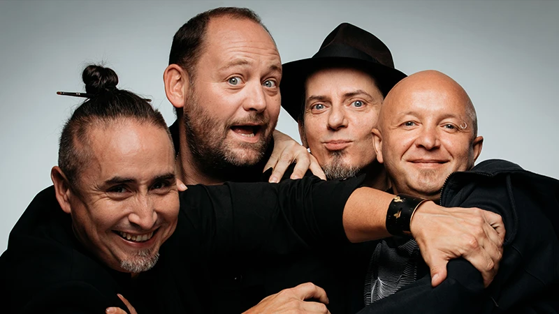

Tryo

Tryo est un groupe français fondé en 1995, connu pour son mélange unique de reggae, de chanson française et de rock acoustique. Avec des paroles souvent engagées et critiques envers les problèmes sociaux et environnementaux
- Guizmo (de son vrai nom Cyril Célestin), chanteur et guitariste,
- Christophe Mali (Christophe Petit), chanteur, guitariste, et accordéoniste,
- Manu Eveno (alias Manu), guitariste, chanteur et flûtiste,
- Daniel Bravo (alias Danielito), percussionniste et spécialiste des rythmes latins et reggae.
Tryo - J'ai rien prévu pour demain